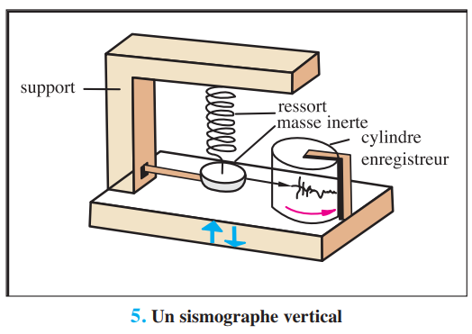
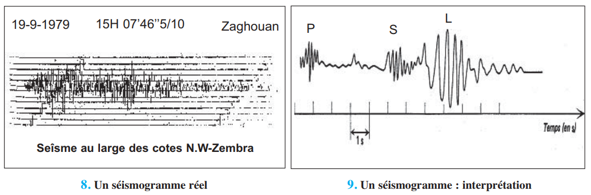
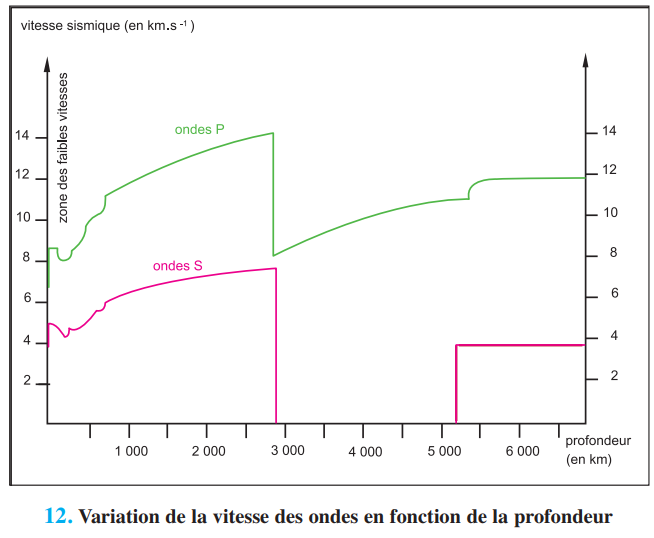
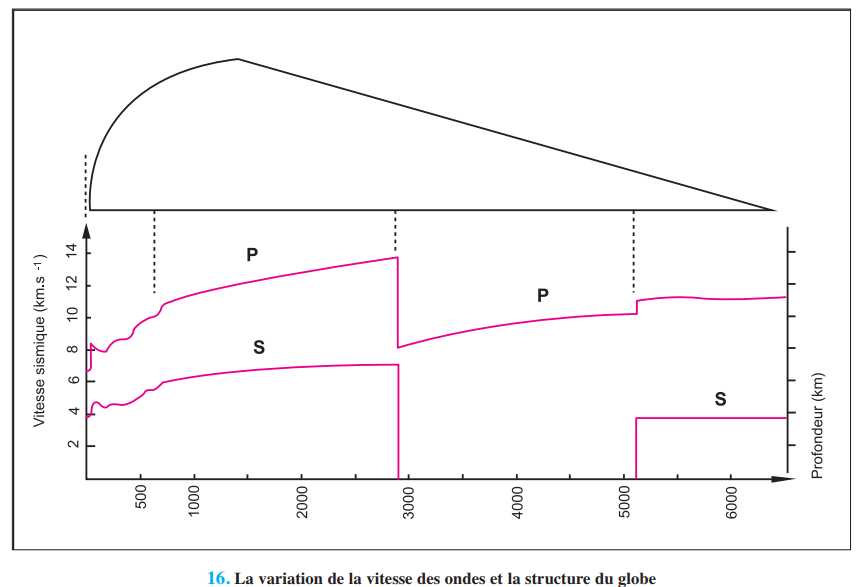
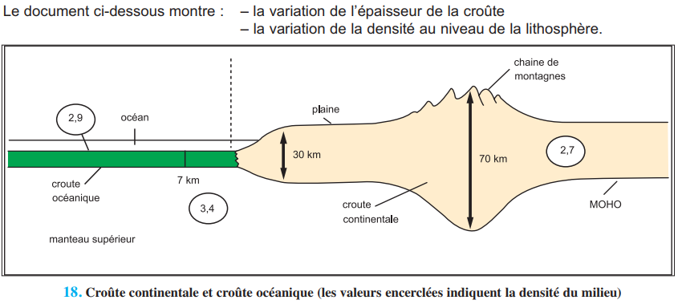
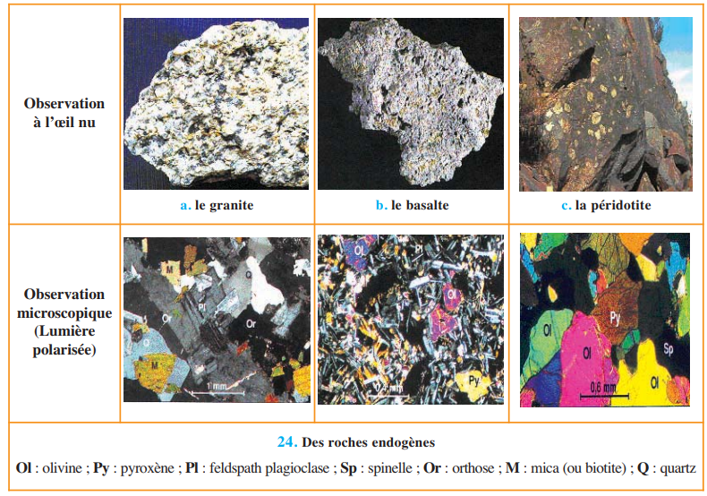
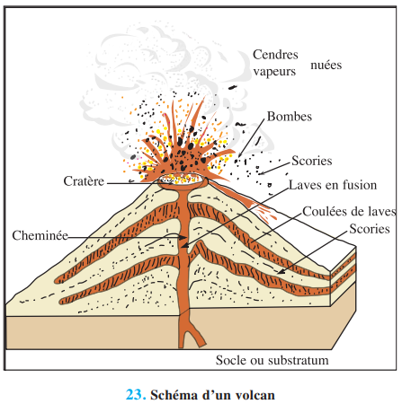

🌐 Chapitre 1 — Structure et composition du globe terrestre
Concept clé
L'intérieur du globe est inaccessible directement (forage max. 12 km). On l'explore indirectement grâce à deux outils : la sismologie (propagation des ondes sismiques) et le volcanisme (remontée de matériaux profonds). Ces deux méthodes ont permis d'établir un modèle structural différencié du globe.
🌊 Activité 1 — La sismologie : outil d'investigation du globe
▼A — Les ondes sismiques : types et propriétés

Doc.5/7 — Sismographe et sismomètre

Doc.8/9 — Séismogramme : ondes P, S et L
| Type d'onde | Nature | Vitesse | Milieux traversés | Ordre d'arrivée |
|---|---|---|---|---|
| Ondes P (Primaires) | Compression — longitudinales (parallèles au déplacement) | Plus rapides (8–14 km/s) | Solides ET liquides ET gaz | 1ères enregistrées |
| Ondes S (Secondaires) | Cisaillement — transversales (⊥ au déplacement) | Moins rapides (4–8 km/s) | Solides UNIQUEMENT (pas les liquides) | 2èmes enregistrées |
| Ondes L (Lentes) | Ondes de surface | Les plus lentes (≈ 3,8 km/s) | Surface terrestre uniquement | 3èmes enregistrées |
Analogie pour retenir P et S :
— Ondes P = comme un ressort comprimé → mouvement Poussé-tiré (longitudinal) → traversent tout
— Ondes S = comme une corde agitée → mouvement de côté (Secousse transversale) → bloquées par les liquides
→ La disparition des S à 2900 km de profondeur prouve l'existence d'un milieu liquide !
— Ondes P = comme un ressort comprimé → mouvement Poussé-tiré (longitudinal) → traversent tout
— Ondes S = comme une corde agitée → mouvement de côté (Secousse transversale) → bloquées par les liquides
→ La disparition des S à 2900 km de profondeur prouve l'existence d'un milieu liquide !
B — Vitesse des ondes et structure interne

Doc.12 — Variation de la vitesse des ondes avec la profondeur

Doc.16 — Modèle structural du globe
| Discontinuité | Profondeur | Découverte par | Ce qu'elle sépare | Signe sismique |
|---|---|---|---|---|
| Moho (Mohorovičić) | ≈ 30 km (continents) / ≈ 7 km (océans) | Mohorovičić, 1909 | Croûte / Manteau | Accélération brusque des ondes P et S |
| Gutenberg | 2 900 km | Gutenberg, 1913 | Manteau / Noyau externe | Disparition des S + ralentissement des P |
| Lehmann | 5 100 km | Inge Lehmann, 1936 | Noyau externe / Noyau interne (graine) | Réapparition des S + accélération des P |
Moyen mnémotechnique — 3 discontinuités : «Mon Globe Légèrement» → Moho (30 km) · Gutenberg (2900 km) · Lehmann (5100 km)
Profondeurs croissantes : 30 → 2 900 → 5 100 km
Profondeurs croissantes : 30 → 2 900 → 5 100 km
Question Ch.1 — n°1
À 3 000 km de profondeur dans le globe terrestre, les ondes S disparaissent. Quelle est la déduction correcte ?
a. La pression est trop forte pour que les ondes se propagent
b. Le milieu traversé est liquide — les ondes S ne se propagent pas dans les liquides
c. Les ondes S ont épuisé leur énergie au cours du trajet
🏔️ Activité 2 — Modèle structural et composition du globe
▼A — Les couches du globe terrestre

Doc.18 — Croûte continentale vs océanique

Doc.24 — Granite · Basalte · Péridotite
| Couche | Épaisseur / Profondeur | État | Composition | Densité |
|---|---|---|---|---|
| Croûte continentale | ≈ 35 km | Solide rigide | Granite (Si + Al) | 2,7–2,8 |
| Croûte océanique | ≈ 7 km | Solide rigide | Basalte (Si + Mg) | 2,9–3,0 |
| Manteau supérieur | 30–700 km | Solide élastique (partie rigide = lithosphère + partie plastique = asthénosphère) | Péridotite + basalte (riches en olivine) | 3,3–4,5 |
| Manteau inférieur | 700–2900 km | Solide visqueux | Péridotite | 4,5–5,5 |
| Noyau externe | 2900–5100 km | Liquide (S disparaissent) | Fe + Ni + S | 9,9–12 |
| Noyau interne (graine) | 5100–6370 km | Solide (S réapparaissent) | Fe + Ni | 12–13 |
B — Lithosphère et asthénosphère
Lithosphère (≈100 km)Croûte + manteau sup. rigide
froide et cassante
froide et cassante
flotte sur
Asthénosphère (550–620 km)Manteau sup. visqueux
chaud et ductile
chaud et ductile
repose sur
Manteau inférieurjusqu'à 2900 km
Énergie interne du globe : Le globe est une source de chaleur (géothermie). Origine : désintégration des éléments radioactifs (Uranium, Thorium) dans les couches profondes. Le noyau atteint 4000–5000°C. Cette énergie est le moteur de la tectonique des plaques (courants de convection).
Texte à trous — Structure du globe
Le globe terrestre a une structure en couches concentriques séparées par des . La discontinuité de (à 30 km) sépare la croûte du manteau. La disparition des ondes à 2900 km prouve que le noyau externe est . La croûte continentale est constituée de tandis que la croûte océanique est constituée de . Le manteau est composé de et le noyau est essentiellement constitué de .
🌋 Activité 3 — Le volcanisme : fenêtre sur les profondeurs
▼
Doc.20 — Le Stromboli en éruption

Doc.23 — Schéma d'un volcan
| Produit volcanique | Nature | Caractéristiques |
|---|---|---|
| Gaz | H₂O (vapeur), CO₂, H₂S, CO | Premier signe d'activité. Témoignent de la composition des magmas profonds |
| Laves basaltiques | Roches liquides | Très fluides · Température ≈ 1200°C · Pauvres en silice · Origine : manteau |
| Laves rhyolitiques | Roches liquides | Très visqueuses · Température ≈ 800°C · Riches en silice · Origine : croûte |
| Produits solides | Bombes, scories, cendres, lapilli | Fragments de magma refroidi projetés lors des explosions |
Origine du magma basaltique : Les péridotites du manteau remontent au niveau des rifts. La pression chute plus vite que la température → les péridotites fondent partiellement → magma basaltique. C'est la fusion partielle des péridotites qui produit les basaltes des dorsales et des volcans de point chaud.